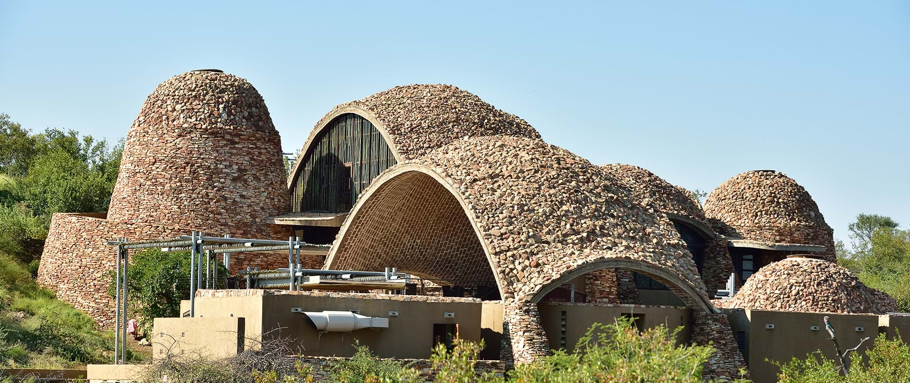
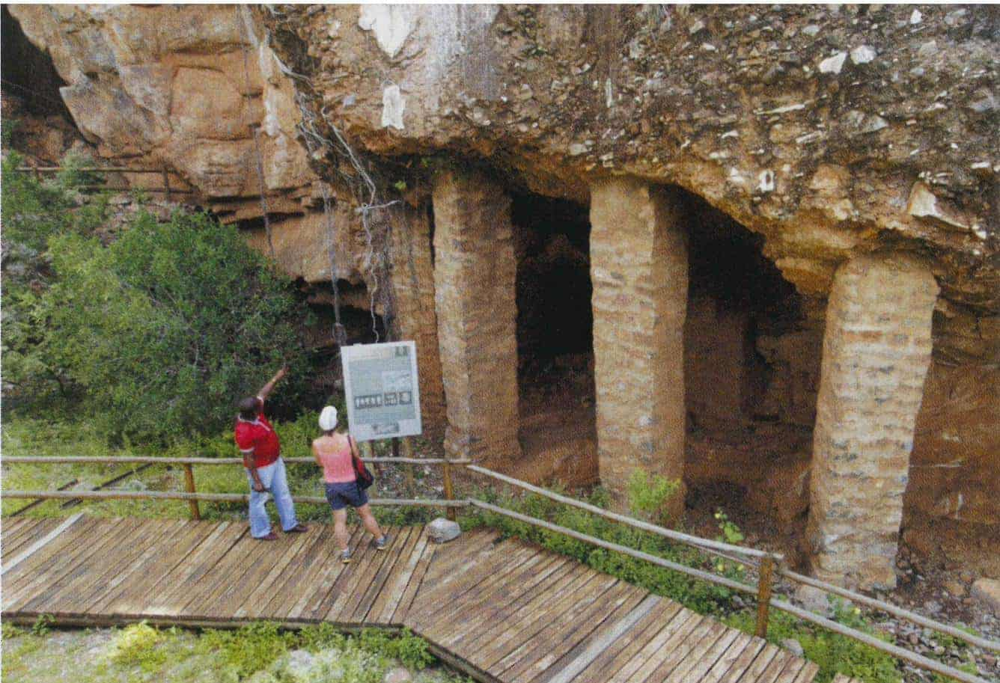
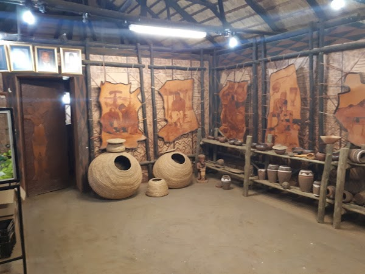

Historical Places
Mapungubwe

Mapungubwe means "Hill of the Jackals" and it was the first state in the whole of Southern Africa,
this
is after Mapungubwe had discovered itself as a kingdom.
The civilization that was taking place in the area, the opportunities, the rule of law, the
bureaucracy
was visible in the area.
From about 1220 to 1300 Mapungubwe was an advanced trading centre and its inhabitants traded with
Arabia,
China and India through the East African harbours. The city could trade because it was so close to
the
Limpopo River,
which connected it with the coast. They exchanged salt, cattle, fish, gold and iron, ivory, wood,
freshwater snail and mussel shells,
chert and ostrich. Eggshell beads were used for glass beads and cloth.
Makapansgat Caves

Makapansgat or Makapan Valley world heritage site has many important archaeological findings dating to
between 2.6 and 3 million years ago. What is particularly interesting about this site is the famous
“Makapansgat Pebble”.
It's suggested to date back to 3 million BCE and is shaped to resemble a human face. It has been
suggested
that this pebble
represents the earliest known example of symbolic thinking of early hominids.The cave is where the clash
between a Boer Commando
and local Langa and Kekana people took place, after the murders of Voortrekkers at Moorddrift, Mapela
and
Pruizen.
Chief Makapan (Mokopane), together with a large number of his tribespeople and their cattle were
besieged in
the cave for nearly a
month between 25 October and 21 November 1854, during which time many hundreds died of hunger and
thirst.
Bakone Malapa Museum

The Bakone are a sub-group of the Northern Sotho Cultural group.
The Cultural Village has been reconstructed in a style that was typical about 250 Years ago.
The BaSotho, who live in the village, teach tourists how they make fire, brew beer and ground maize.
They also have handcraft demonstrations such as woodcarving, pottery, basketry and beadwork. These
crafts are sold at a craft shop locally at a reasonable price.